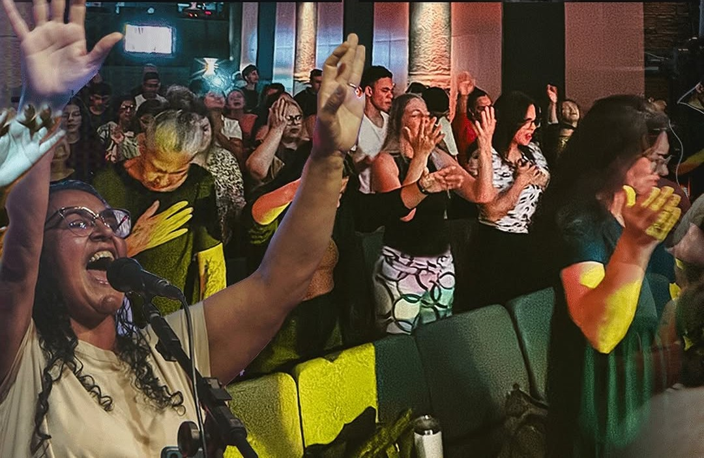
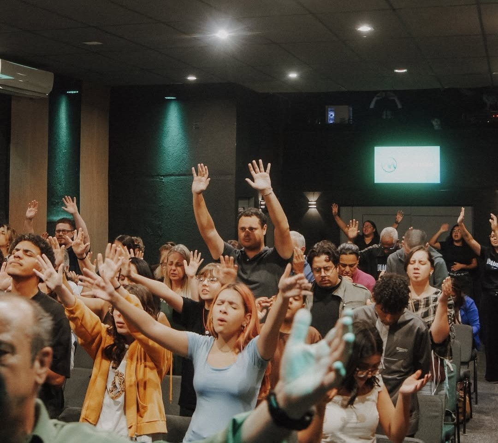
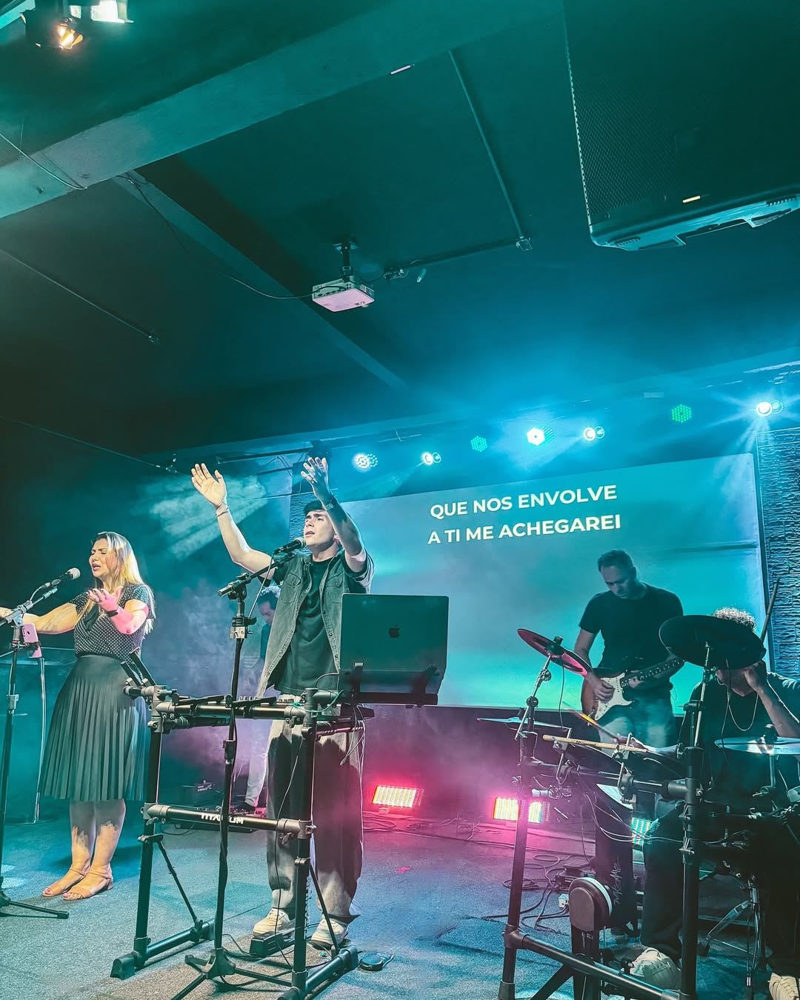

Sinai Kids
Formando uma geração no Senhor
Formamos crianças desde cedo fundamentadas na Palavra, sensíveis à voz do Espírito Santo e firmadas na identidade em Cristo.
Saiba maisFormamos crianças desde cedo fundamentadas na Palavra, sensíveis à voz do Espírito Santo e firmadas na identidade em Cristo.
Saiba maisConduzimos a igreja a um lugar de intimidade com Deus através da adoração, criando ambientes para o fluir do sobrenatural.
Saiba mais
Sustentamos espiritualmente a igreja por meio da oração, discernimento e sensibilidade ao Espírito Santo.
Saiba mais
Ambiente de edificação, cura e fortalecimento espiritual, levantando mulheres que influenciam gerações.
Saiba mais
Fortalecemos jovens na Palavra, identidade e chamado, levantando uma geração que vive o Reino com ousadia.
Saiba mais